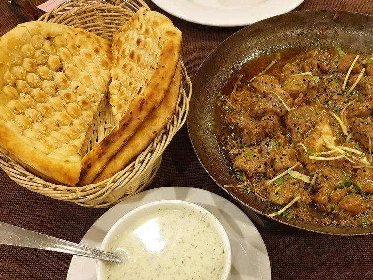

Roghni Naan

Pakistani style flatbread
A traidional soft and fluffy Pakistani style flatbread. It is made in tandoor (clay oven).
It has soft texture with golden top that is enriched with melted butter as soon as it is out of the tandoor.
Ingredients:
- Flour
- Yeast, Baking soda
- Salt
- Seasmae seeds
Steps:
- Combine all dough ingredients in a bowl. Knead into a soft dough with help of water.
- Let the dough settle for 2 hours
- Prepare the balls
- Roll out the doughs with roller and make indents
- Put Naans in pre heat oven
- Do not try the above recipe. It is just for the recipe project of Odin. I am not an expert